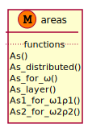
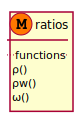

Sections¶
areas¶

-
streng.ppp.sections.concrete.reinforcement.areas.As_distributed(dia, s)[source]¶ Area reinforcement for 1.0m length
combos¶

-
class
streng.ppp.sections.concrete.reinforcement.combos.LongReinforcementLayer(ns: List[float], dias: List[float], units_input='mm', units_output='mm')[source]¶ -
classmethod
from_string(reinf_string: str, units_input='mm', units_output='mm', dia_symbol='Φ')[source]¶
-
As_equiv¶
-
Astot¶
-
dia_equiv¶
-
dia_max¶
-
dia_min¶
-
property
dias¶
-
property
length_multiplier_input¶
-
property
length_multiplier_output¶
-
property
ns¶
-
ntot¶
-
classmethod
ratios¶

-
streng.ppp.sections.concrete.reinforcement.ratios.ρw(nw, diaw, b, s, α=1.5707963267948966)[source]¶ Ποσοστό εγκάρσιου οπλισμού